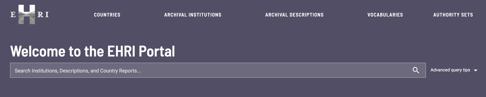
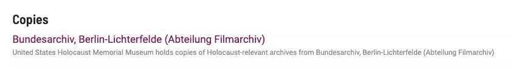
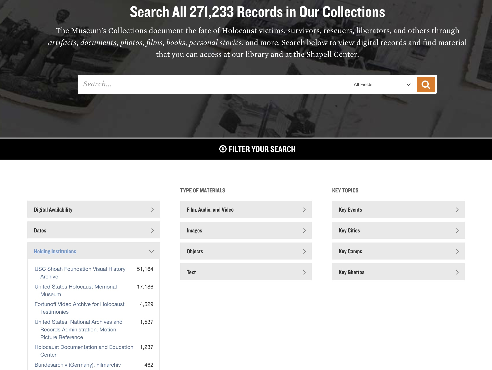
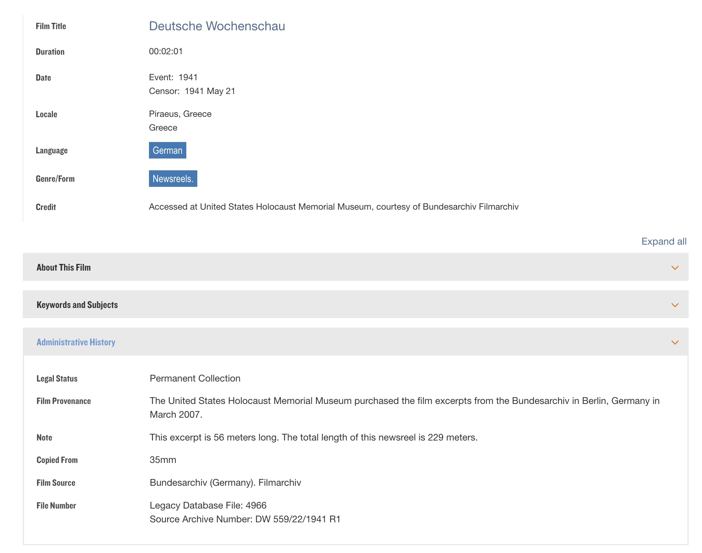
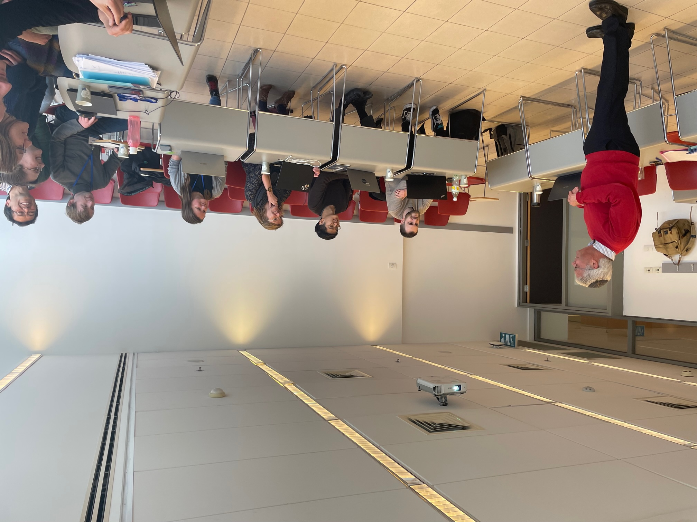

Copy-Original Links in the EHRI Portal
 The home search bar for the EHRI portal
In the spring of 2023, I was asked to be a part of the European Holocaust Research Infrastructure (EHRI)’s Work Package 9, which involved working with copied collections of the USHMM and archives across Europe and Israel. I worked with researchers in Europe and at Yad Vashem in Jerusalem to find ways to increase the links that connected copied collection items to their original collection items. I co-wrote a section of a deliverable to the wider EHRI community specifically about linking collection items that were copied and acquired by the USHMM, where the original items existed at the Film archive branch of the German Federal Archive, otherwise known as the Bundesarchiv-Filmarchiv in Munich.
The EHRI Portal
The EHRI Portal’s goal is to create an online searchable database of all the archival metadata relating to the Holocaust in institutions in Europe and beyond. By doing so, they hope to make a space where researchers, students, and users are able to find relevant collections and the institutions from which they are located. They also provide different vocabularies, links, and authority sets that help users navigate the sprawling nature of the database. The links made possible in the EHRI portal across institutions and collections are the ones central to this post.
Copy Collections
 At the bottom of every EHRI collection item, if relevant it displays a link to its copy or original.
One issue being addressed in Work Package 9 has to do with copy collections. These are collections where the collection item is a copy of an original item at a different institution. For example, the USHMM has many collection items where the original collection exists in a different institution in Europe or Israel.
The goal in this work package is to be able to identify copy-original links in the portal and have them be ingested into the portal so that when a user clicks on a copy item in the portal, they can see where the original also exists, and vice versa. Users can also search by institution and see where institutions have copied collections from other institutions.
There are, however, varying levels of scope to these links. In some cases, we have collection level data for the copy, but we only know the institution in which the originals exist, but not their collection level data. Other times, we have both collection level data for the copy and original. This happens for a variety of reasons. Sometimes, the institution has not yet been able to import their data into the EHRI portal. In other cases, the specific data or even item is lost and we only know that the original existed in one institution. In our example for this post, we will work with collection level copied items at the USHMM, and how we can link them to one institution, the Bundesarchiv-Filmarchiv.
Identifying the Links
 Homepage of the USHMM collections search, highlight the Holding Institutions filter
So how is this done? To start, we can look at the metadata at the USHMM. Indeed, on the USHMM collection search page, there is a filter for “Holding Institutions”. On the backend of the USHMM data in the search platform Solr, there is also a field for the original holding institution for any particular record where that metadata is pertinent. Filtering the copied records by an original holding institution (in this case the Bundesarchiv-Filmarchiv) and then selecting the IDs from the results, allows for a simple transition from the USHMM data to the EHRI Portal connections. We can export this data in a variety of formats like JSON, CSV, or XML and move on to our next step.
 One copy collection item in the USHMM search originally at the Bundesarchiv-Filmarchiv
From here, we run a simple check of the ids against the EHRI Portal API to ensure that the copy collection item in the USHMM does in fact exist in the EHRI Portal. This check can be done simply in Python and Jupyter Notebooks, using the Search API on the EHRI Portal. Then all we need are the EHRI institution id or ids that are the original holding institutions for the copy collection records, and the connection data is ready for ingestion into the EHRI Portal. To view this code in a Google Colab notebook, click here.
Discussion
The automatic linking of copy collection to the original institution described in the previous section provides a simple and quick methodology for linking the USHMM copy data to the Bundesarchiv-Filmarchiv. Even though these links may not be as specific as the copy collection to original collection links, they are still valuable, especially in cases like the Bundesarchiv-Filmarchiv where institutions otherwise may have no collection items on their institution page. In this case there is no opportunity for a copy collection to original collection link; the most specific link would be copy collection to original institution.
Indeed, this was the case for the Bundesarchiv-Filmarchiv where, as of May 2023, no collection items directly from the Bundesarchiv-Filmarchiv exist in the EHRI Portal. Now when users search for the institution, they will see the copied collection items that are from the USHMM’s holdings. This methodology is also advantageous in that most of the work comes from the copied collection side of collecting the data. Once the ids are collected and automatically verified, they only need to be matched to one EHRI institution ID, the original-holding institution.
 The team working at the Yad Vashem educational facilities in Jerusalem, March 2023